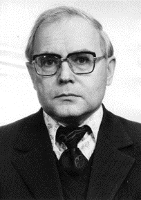

Ершов Андрей Петрович
(19 апреля 1931 – 8 декабря 1988)
Выдающийся программист и математик, академик АН СССР, автор первой в мировой практике монографии по автоматизации программирования. Под руководством Ершова разрабатывались одни из первых отечественных программирующих программ («интегральные разработки» языка и системы программирования). Сформулировал ряд общих принципов программирования как нового и своеобразного вида научной деятельности, затронул аспект, который впоследствии будет назван дружественностью к пользователю, одним из первых в стране поставил задачу создания технологии программирования. Стал одним из создателей так называемой «школьной информатики» и признанным лидером отечественной школьной информатики, вошел в число ведущих мировых специалистов в этой области.